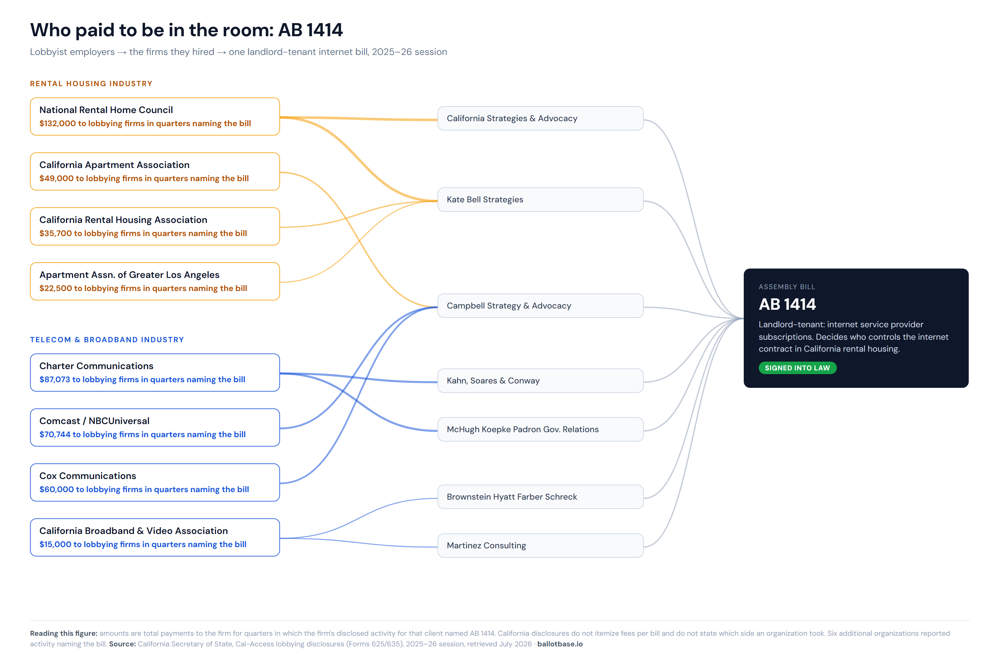

It is July 6. Like everyone else, the money is back at work after the Independence Day weekend. Unlike most of us, it has a hard deadline: the second quarter closed on June 30, and every lobbying firm and lobbyist employer in California owes the Secretary of State a disclosure report by the end of the month. Somewhere in Sacramento right now, someone is reconciling a quarter's worth of influence spending into a Form 635.
This post is about what those filings contain, why they are the quietest important documents in California politics, and what they reveal when you actually read them.
In November 2024, California voters rejected Proposition 33 and the largest ballot measure fight in the country ended. More than $220 million had moved through committees on both sides. [1] The television ads stopped. The committees wound down. Most people who followed the fight, to the extent they followed it at all, moved on.
The money did not move on. It changed venues.
The California Apartment Association, the trade group that organized $135.8 million in opposition spending against Prop 33, [2] also runs a permanent lobbying operation in Sacramento. In the first quarter of 2026, that operation reported $494,783 in lobbying expenditures. [3] The quarter before that, $630,206. Across calendar year 2025, the association reported roughly $2.87 million in total lobbying spend. [3]
None of this is hidden. It is disclosed in quarterly filings with the California Secretary of State, under penalty of perjury, with dollar amounts and firm names and descriptions of the legislation involved. I wrote last month about how ballot measure money is positioned long before the public campaign begins. The same pattern holds for legislation, with one difference. A ballot fight eventually becomes loud. The legislative version of the same fight almost never does.
The other ledger
When a ballot measure campaign raises and spends money, the disclosures land in a place journalists have learned to check. Lobbying disclosures sit in a different corner of Cal-Access, filed on different forms, and they receive a small fraction of the attention.
The mechanics are worth understanding because they are simpler than they look. An organization that pays to influence legislation in California files a quarterly report, Form 635, disclosing what it spent. That total breaks into pieces: compensation for its own in-house lobbyists, payments to outside lobbying firms, activity expenses, and a catchall category called other payments to influence. The outside firms file their own reports, Form 625, listing each client and what that client paid them for the quarter, along with a description of the legislative work involved. Those descriptions frequently name specific bills.
Put the two sides together and you get a map: which interests hired which firms, what they paid, and which bills they were working. The data has existed for decades. It is public. It is also stored in a database schema so hostile that almost nobody outside of a few Sacramento consultancies has ever read it systematically.
A heartbeat, not a spike
The Prop 33 fight was a spike: enormous, visible, and over in months. The lobbying operation behind the same policy interests is a heartbeat. It files every quarter whether or not anyone is watching.
The California Apartment Association's own filings for the five most recent reported quarters show the rhythm. Roughly $459,000 in the first quarter of 2025. Then $1.28 million in the second quarter, the association's largest quarter in the period. Then $496,000, then $630,000, then $495,000 to open 2026. [3]
That second-quarter 2025 number deserves a closer look. Most of it, $938,789, sits in the other payments to influence category rather than in lobbyist compensation or firm fees. [3] The disclosure does not require a narrative explanation, and I will not supply a speculative one. What the filing does establish is that in a single quarter, while the Legislature was in session and housing bills were moving through committee, the state's largest landlord trade group spent nearly a million dollars on influence activity beyond its normal lobbying payroll. Anyone tracking housing policy in real time would have wanted to know that in July 2025, when the filing landed. Almost nobody did.
The association's disclosed legislative interests in the current session name at least fifteen specific bills, covering rental pricing, eviction procedure, security deposits, and habitability standards. [4] Fifteen bills is not a scandal. It is a job description. That is the point. The organizations that fought the loudest ballot measure war in the country treat legislative influence as routine quarterly work, and the disclosure system records all of it for anyone willing to look.
The anatomy of one bill
Assembly Bill 1414, introduced by Assemblymember Ransom, regulates how landlords handle internet service subscriptions in rental housing. It is the kind of bill that gets a few trade press mentions and no general coverage. It was signed into law. [5]
The lobbying disclosures around it tell a richer story than the coverage did. During the current session, at least fourteen organizations reported lobbying activity naming AB 1414. On one side of the table: the California Apartment Association, the National Rental Home Council, the California Rental Housing Association, and the Apartment Association of Greater Los Angeles. On the other: Charter Communications, Comcast, Cox, Hotwire Communications, and the California Broadband and Video Association. Landlords and telecoms, each with a direct financial stake in who controls the wire into the building. [4]

The firm payments give a sense of scale. The National Rental Home Council paid $132,000 across the quarters in which its firms, California Strategies & Advocacy and Kate Bell Strategies, disclosed work that named the bill. Charter Communications paid $87,073 to its firms in quarters naming it. Comcast paid $70,744, Cox $60,000, the Apartment Association itself $49,000. [4] A necessary caveat: quarterly disclosures do not allocate fees bill by bill. A firm's disclosed payment covers everything it did for that client in the quarter, and the bill is one item in the activity description. The precise dollar figure attached to any single bill is unknowable from the filings. The roster of who paid to be in the room is not.
Two things about that roster are worth sitting with. First, California disclosures do not state which side an organization is on. The filings record that Charter paid to lobby on AB 1414, not whether Charter supported or opposed it. Anyone who tells you the disclosures show a company's position is reading in something the data does not say. Second, and more striking: for a bill that received essentially no public attention, the room was crowded. Nine-figure industries sent representation to a fight most Californians never heard about. Multiply that by the several hundred bills that draw disclosed lobbying activity in a session and you have a reasonable picture of how Sacramento actually works.
The sequence, again
The argument I made about ballot measures was about timing. The financial infrastructure is visible before the public campaign starts, for anyone equipped to see it. The legislative version of that argument has a built-in lag: quarterly reports arrive about a month after each quarter closes. Disclosure is not real time, and it would be dishonest to pretend otherwise.
But the timing argument survives the lag, because the alternative is not real-time information. The alternative is nothing. A tenant coalition deciding in March which bills to organize around can read the fourth-quarter filings and know which trade groups built lobbying capacity around which subjects. A firm advising a client can see when a new employer registers, or when an organization that has never touched a policy area suddenly appears in the disclosures around it. Registration is a leading indicator. Organizations hire lobbyists before hearings, not after. The filings will tell you who entered the fight before the fight is public, if you read them when they land instead of years later.
What this means if you just live here
Most readers of lobbying disclosures are professionals. But AB 1414 is not a professional's law. If you rent in California, it governs who decides which internet provider serves your building. It passed with at least fourteen industry organizations paying for representation in the room and, as far as I can find, no sustained press coverage at all.
The takeaway for a voter is not that you should read quarterly lobbying filings. Nobody should have to. The takeaway is that this record exists for nearly every law that touches your rent, your utilities, your commute, and your kids' schools, and that when a legislator tells you why a bill passed or died, the disclosure record is one of the few tools you have for checking the story. The industries follow this paper trail closely. The people the laws apply to almost never see it. Closing that gap does not require every voter to become an analyst. It requires the record to be readable, which is a solvable problem.
There is a third layer this series has not reached yet. Lobbying disclosures tell you who paid to influence a bill. The Legislature's own records tell you how every member voted on it, and campaign finance filings tell you whose money those members ran on. Joining those three datasets is where this analysis goes next.
How BallotBase fits into this work
BallotBase now reads California's lobbying disclosures the way it reads campaign finance filings: systematically, every filing, linked together. For any bill we track, the platform surfaces which employers reported lobbying activity naming it, which firms they hired, and what they paid those firms, drawn directly from Form 625 and Form 635 filings in Cal-Access. The same employer names are cross-referenced against campaign contribution records, so the full financial context around a bill sits in one place.
For advocacy organizations, that means seeing the room before walking into it. For lobbying and public affairs teams, it means watching capacity form around your issues quarter by quarter instead of reconstructing it after the session ends. The disclosures have always been public. Reading all of them was the hard part, and that is the part we automated.
If you work on legislation in California and want to see the financial landscape around your bills, that is the work BallotBase is built for.
Sources
[1] CalMatters / LA Public Press, October 2024. "More than $220 million has been funneled into California's competing ballot measures, Prop. 33 and Prop. 34." lapublicpress.org
[2] CalMatters, November 2024. Reporting on the California Apartment Association issues committee's fundraising in opposition to Prop 33 and in support of Prop 34. calmatters.org
[3] California Secretary of State, Cal-Access. California Apartment Association quarterly lobbyist employer reports (Form 635), reporting periods Q1 2025 through Q1 2026. Totals as reported on Part III summary lines of the most recent amendment of each filing. cal-access.sos.ca.gov
[4] California Secretary of State, Cal-Access. Lobbying firm quarterly reports (Form 625), payments received and activity descriptions, 2025-26 legislative session, retrieved July 2026. Firm payments cover all disclosed work for the named client in the quarter; disclosures do not itemize fees per bill. cal-access.sos.ca.gov
[5] California Legislative Information. AB 1414 (Ransom), Landlord-tenant: internet service provider subscriptions. Chaptered. leginfo.legislature.ca.gov
Data referenced in this post is sourced from California Cal-Access public lobbying and campaign finance filings and public reporting. Lobbying disclosures record payments and activity; they do not state positions on legislation, and none are asserted here. No causal relationship between lobbying expenditures and legislative outcomes is claimed. Symmetric analytical treatment applied to all organizations cited.